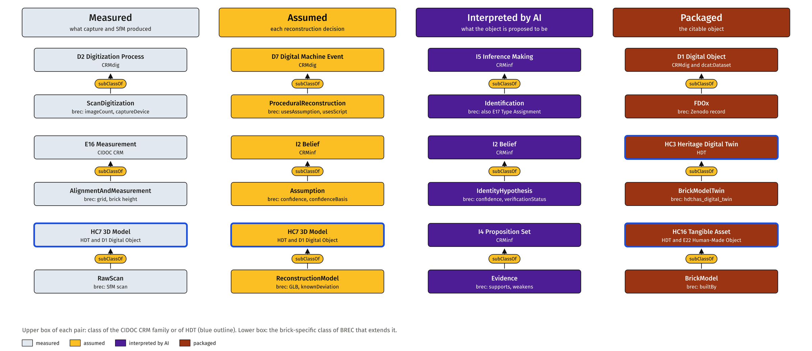
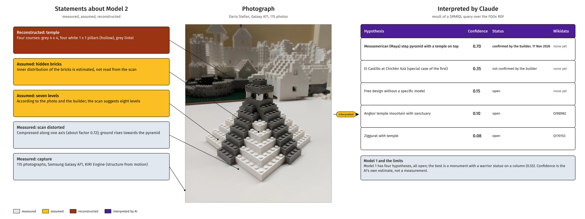
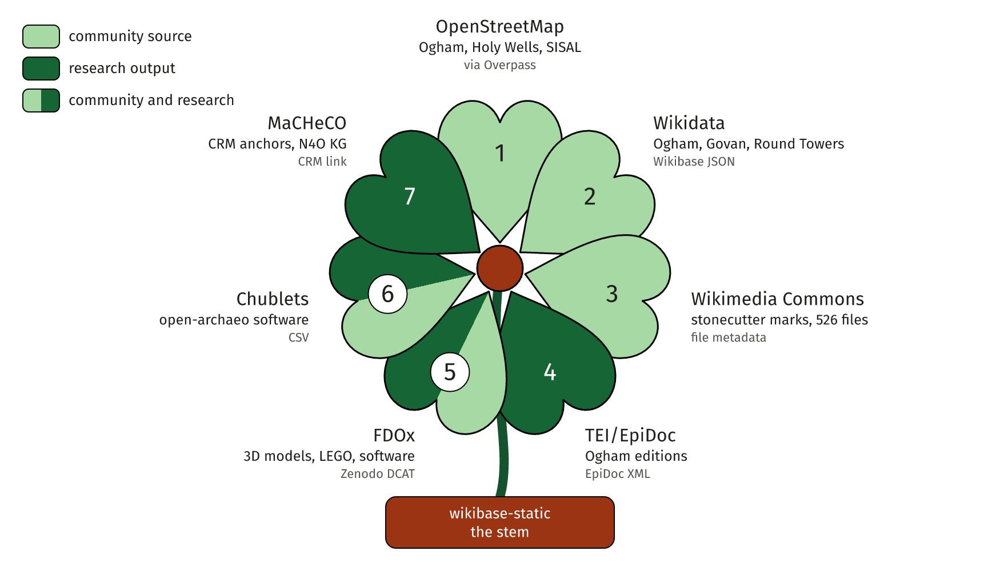
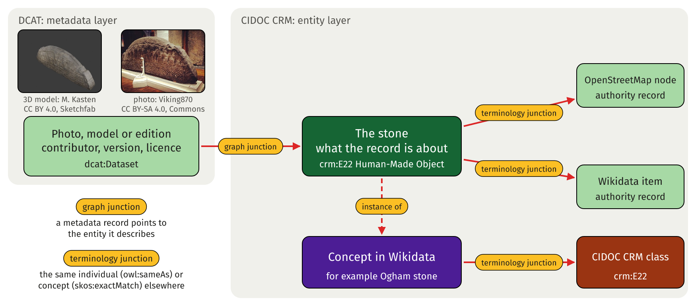
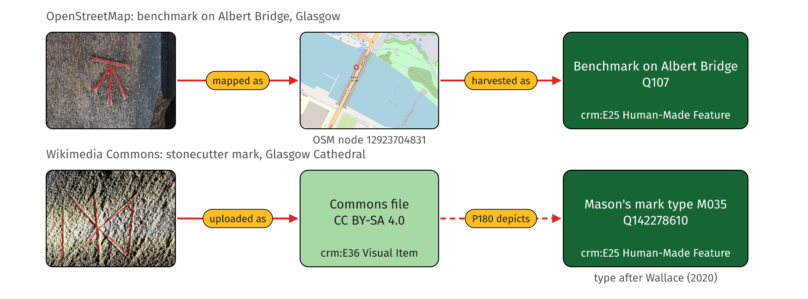
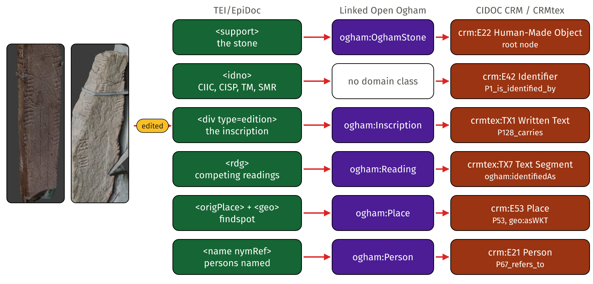

| No. | Figure | Work |
| Fig. 1 | From capture to the federated ecosystem | Poster abstract |
| Fig. 2 | Layers and statement types | Poster abstract |
| Fig. 3 | Model 2: statements and AI hypotheses | Poster abstract |
| Fig. 1 | Seven-leaf clover | Short paper |
| Fig. 2 | Graph and terminology junctions | Short paper |
| Fig. 3 | OpenStreetMap and Commons | Short paper |
| Fig. 4 | Ogham stones and the TEI crosswalk | Short paper |
Poster abstract: BREC, CIDOC CRM, HDT, and FDOx
Abstract for the DH 2027 poster (Galway, 28 June to 3 July 2027), 500 to 750 words. Figures redrawn on 25 November 2026.
Fig. 1 From capture to the federated ecosystem

Fig. 1. From capture to knowledge graph: measured, assumed, and AI-interpreted statements, packaged as FDOx.
- Photographs: Florian Thiery (Model 1) and Daria Stefan (Model 2). Renderings of the reconstruction models: made from the GLB files of the FDOx records.
- FDOx column: RO-Crate with 3D model, photographs, RDF, metadata, and identifiers.
Fig. 2 Layers and statement types

Fig. 2. CIDOC CRM and HDT classes with the BREC classes that extend them, by statement type.
- Upper box of each pair: class of the CIDOC CRM family or of HDT (blue outline); lower box: the BREC class that extends it.
- Class names and properties are those of BREC 0.5.0 (docs/brec.ttl).
Fig. 3 Model 2: statements and AI hypotheses

Fig. 3. Model 2: statements about the object and AI hypotheses with confidence and status.
- Hypotheses, confidence, and status are the values in docs/brec.ttl (instances hyp_m2_a to hyp_m2_e).
- The confirmed Maya hypothesis and El Castillo have no Wikidata match yet.
Short paper: community sources and research outputs
Figures of the DH 2027 short paper (descriptions as in the README of dh2027/figures).
Fig. 1 Seven-leaf clover

The seven-leaf clover: light green community source, dark green research output, split leaf for both.
Fig. 2 Graph and terminology junctions

Backbone with the graph junction and the terminology junction, with photograph and 3D-model preview of one stone.
Fig. 3 OpenStreetMap and Commons

The two community leaves in practice: benchmark on Albert Bridge and the distribution map of 127 geotagged Commons files.
Fig. 4 Ogham stones and the TEI crosswalk

Two Ogham stones (FDOx 3D-model previews) and the crosswalk from the TEI/EpiDoc element to the Linked Open Ogham class and the CIDOC CRM / CRMtex class.